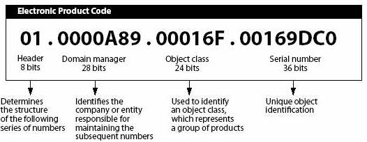

Fundamenten van Netwerken
Internet of Things 2022-23
Netwerken
Computernetwerk
- Bestaat uit
- Knooppunten - apparaten met een netwerkfunctie
- Verbindingen
- combinatie van computersystemen, besturingssystemen, bekabelingen en satellietverbindingen
Skribbl.io
Netwerk Topologie
- Manier waarop de knooppunten en verbindingen zijn georganiseerd
- Topologieën
- Point-to-point
- Bus
- Ring / Dual Ring
- Star
- Tree
- Mesh
- Hybrid
Gebruik
- Client / Server
- Peer-to-peer
RFID
- Radio-Frequency Identification
- Data wordt opgeslagen op een sticker (transponder)
- elektromagnetische lezer leest de gegevens m.b.v. radiogolven
- Makkelijk te verwerken
- Beveiligngscode: Electronic Product Code
- Werking via inductie (elektromagnetisch veld)
Electronic Product Code
96-bit datastring
Soorten RFID
- Passief
- Geen batterij, door inductie
- Leesafstand: 1-10 cm
- Semi-actief
- Enkel zenden op antwoord van ontvangen signaal
- Actief
- Batterij: interval voor uitzenden
- Leesafstand: 10-100 m
- Chiploze tags
- Geen ID
| + | - |
| Meer info | Uitleesafstand |
| Detecteerbaar zonder zichtbaar te zijn | Metalen omgevinden |
| Gepaste plaatsing in pakket | Fraudegevoelig |
| Herprogrammeerbaar | Gebrek standaardisatie |
NFC
- Near Field Communciatie
- Enkele CM
- 1997: Eerste toepassing in Star Wars Speelgoed
- 2011: Mastercard
- Google Pay / Apple Pay
- Actieve lezer en passieve NFC-tag
BAN
- Enkele meters
- In of rond menselijk lichaam
- Ster (met hub) of multihop
- Wireless Sensor Network - Zhong Yang
PAN
- Personal Area Network
- WPAN
- 0 tot 10m
Bluetooth
- Implimentatie WPAN
- Ericsson in 1994
- 1 lead en 7 followers
- 2.4GHz
- 0 tot 10m
BLE
- Bluetooth Low Energy
- Bevat EPC
LAN
- Local Area Network
- 1960
IP
- Internet Protocol
- IPv4: 32 bits
- IPv6: 128 bits
- LAN: starten met 192
WAN
- Wide Area Network
- Verschillende LANs
- Gehuurde datacommunicatielijnen
- Complexe structuur
LPWAN
- Low Power Wide Area Network
- Radio-uitgeruste apparaten over langere afstanden laten communiceren
- Geen limieten of beperkingen van batterijduur
- Smart Cities: Data Streams over grote afstanden
Wifi
- Wireless Fidelity
- IEE 802.11 - certificaat
- 2.4GHz - 5GHz
- Access points
Cellular
- Verbinding telefoon <> zendmast
- Ook Tablets, Smartwatches, IoT, Laptops
- Zendmasten
1G
- 1979: Japan
- 1981: Scandinavische landen
- 1983: VS
- Analoog
- 2.4 kbits/s
2G
- 1991: Eerste experimenten
- 10km bereikbaar
- GSM-standaard
- Telefoneren, SMS, MMS
- Digitaal geëncrypteerde verbinding
- 2.5G GPRS (General Packet Radio Service) met een maximum snelheid van 48 kbits/s
- 2.75G EDGE (Enhanced Data rates for GSM Evolution) met een maximum snelheid van 300 kbits/s
3G
- 3km (hogere frequentie)
- Meer zendmasten
- 2 Mbits/s
4G
- 35km
- 100 Mbits/s
- 4G LTE met een maximum snelheid van 12.5 Mbits/s
- Snelheid in 2020 met een maximum snelheid van 55.5 Mbits/
5G
- LF (< 1 GHz) 100Mb/s
- MF (< 6 GHz) 1Gb/s
- HF (> 6 GHz) 10Gb/s
Zigbee
- Open standaard draadloze communicatie
- LPWAMN
- Lage kost en verbruik
- Coordinator, Router en End Device
- Beacon / Non-beacon
- IEEE 802.15.4
Z-wave
- Domotica
- Mesh
- Toestellen van verschillende fabrikanten
- 868 Mhz
- Max. 30m
- 100 kbits/s
LoRa
- Long Range
- protocol voor lower physical layer
- 15km
- Beperkt energieverbruik
- 0.3 kbits/s en 27 kbits/s
- Closes Source, eigenaar Semtech
LoRaWan
- Applicatie van LPWAN
- Open Source
- LoRaWan Gateway > niet zenden én ontvangen tegelijk
Protocollen
Indeling
- Applicatielaag
- DNS, FTP, HTTP, HTTPS, SMTP, POP, IMAP
- Transportlaag
- UDP, TCP, PORT
- Netwerklaag
- IP / IPv4, IPv6
- Datalinklaag
UDP
- User Datagram Protocol
- Connectieloos protocol
- Geen ontvangstbewijs
- Geen controle op fouten
- DNS-requests & streaming audio en video
TCP
- Transmission Control Protocol
- Connectiegestuurd protocol
- Verbinding wordt opgebouwd en afgesloten
- Verzonden data wordt bevestigd
- Verzonden data wordt in de juiste volgorde ontvangen
- Trager dan UDP
- Zoals telefoongesprek
| TCP | UDP |
| Verbinding-georiënteerd protocol | Bericht-georiënteerd protocol |
| Tweezijdige controle | Eenzijdige controle |
| Betrouwbaar | Snel |
| Herschikking pakketten | Geen herschikking |
| 20 bytes | 8 bytes |
| Foutherstel | Geen foutferstel, verwijderen foutieve pakketten |
HTTP
- Hypertext Transfer Protocol
- Gebruikt voor communicatie tussen webserver en browser
- Request / Response
- Request-type, URI, headers en eventuele inhoud
- Response-code, headers en eventuele inhoud
- GET, POST, PUT, DELETE
- HTTPS > SSL
HTTP-responsecodes
- 200 OK
- 404 not found
- 403 forbidden
- 500 internal server error
- 503 service unavailable
- 504 gateway timeout
MQTT
- Message Queuing Telemetry Transport
- Lightweight messaging protocol
- M2M connection-oriented protocol
- verbinding tijdens gegevensoverdracht intact
- TCP-based
- MQ-broker geeft toegang
- Abonneren op kanalen
- Bericht: topic en inhoud
MQTT: Quality of servive
- 0: At most once - fire and forge
- 1: At least once - acknowledged delivery
- 2: Exactly once - assured delivery
CoAP
- Constrained Application Protocol
- Lightweight protocol for machine-to-machine communication
- Designed voor kleine apparaten
- HTTP/1.1 over UDP
- DTLS als oplossing
- Client / Server
- Gebaseerd op REST
- Eenvoudig te vertalen naar HTTP
AMQP
- Advanced Message Queuing Protocol
- Applicatielaag
- Message Oriented Middleware (MOM)
- Berichtbezorgingaranties
- SASL of TLS
Andere
- DDS
- WebSockets
- WebRTC
- XMMP
- SNWP
- LwM2M
Cloud Systems
AaS: as a service


IaaS
- Infrastructure as a Service
- Virtualisatie
- Storage
- Networking
- Compute
PaaS
- Platform as a Service
- Runtime
- Middleware
- Tools
- Services
SaaS
- Software as a Service
- Webapplicaties
- Webbased tools
- Webbased services
BaaS
- Backend as a Service
- Database
- Authenticatie
- Storage
- Analytics
Andere
- Function as a Service
- Mobile Backend as a Service
- Internet of Things as a Service
- Analytics as a Service
- Security as a Service
- Identity as a Service
- Monitoring as a Service
- Testing as a Service
- Content as a Service
IoT Platformen
- Device platform
- sensoren, actuatoren, gateways en andere apparaten
-
Connectivity Platform
- connectiviteit tussen devices en cloud
-
IoT platform
- Apparaatbeheer
- Dataprocessing
- Analytics
- Applicaties
IoT platformen
- AWS IoT
- Microsoft Azure IoT
- Google Cloud IoT
- IBM Watson IoT
- Oracle IoT
- ThingWorx
- ThingSpeak